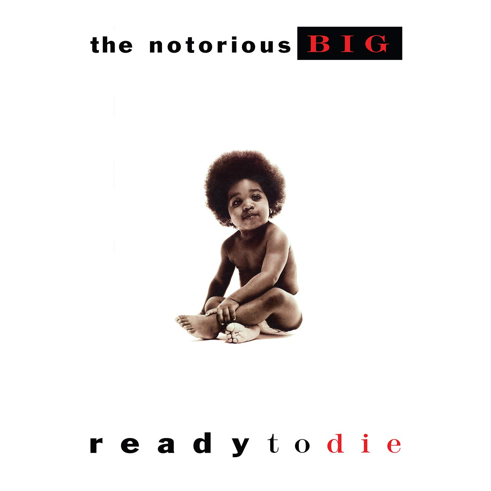
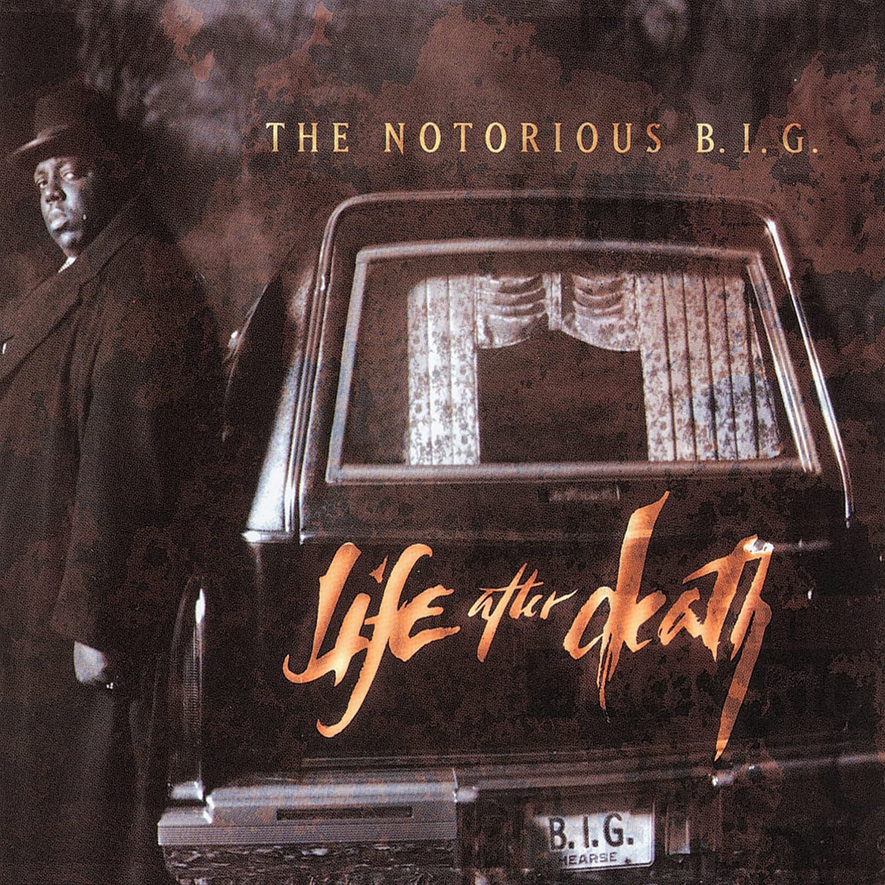

<!DOCTYPE html>
<html lang="en">
   <head>
      <meta charset="UTF-8" />
      <meta http-equiv="X-UA-Compatible" content="IE=edge" />
      <meta name="viewport" content="width=device-width, initial-scale=1.0" />
      <title>The Notorious B.I.G</title>
      <link rel="shortcut icon" href="images/Logo/ico.png" type="image/x-icon" />
      <link rel="stylesheet" href="css/estilos.css" />
      <script
         src="https://kit.fontawesome.com/6dda3ec7ac.js"
         crossorigin="anonymous"
         ></script>
      <link rel="preconnect" href="https://fonts.googleapis.com" />
      <link rel="preconnect" href="https://fonts.gstatic.com" crossorigin />
      <link
         href="https://fonts.googleapis.com/css2?family=Inconsolata:wght@300&display=swap"
         rel="stylesheet"
         />
      <link rel="preconnect" href="https://fonts.googleapis.com" />
      <link rel="preconnect" href="https://fonts.gstatic.com" crossorigin />
      <link
         href="https://fonts.googleapis.com/css2?family=Azeret+Mono:ital,wght@1,300&display=swap"
         rel="stylesheet"
         />
   </head>
   <body>
      <header>
         <div class="logo"></div>
      </header>
   </body>
</html>
<a href="index.html"></a> 
</div>
<nav class="nav">
   <ul class="nav__ul">
      <li class="nav__li"><i class="fas fa-home"></i><a href="index.html">Home</a></li>
      <li class="nav__li"><i class="fas fa-images"></i><a href="gallery.html">Gallery</a></li>
      <li class="nav__li"><i class="fas fa-music"></i><a href="#music">Music</a></li>
      <li class="nav__li1"><a href="https://es-la.facebook.com/NotoriousBIG/" target="_blank"><i class="fab fa-facebook-square"></i></a></li>
      <li class="nav__li1"><a href="https://www.instagram.com/thenotoriousbig" target="_blank"><i class="fab fa-instagram"></i></a></li>
      <li class="nav__li1"><a href="https://twitter.com/thenotoriousbig" target="_blank"><i class="fab fa-twitter-square"></a></i></li>
   </ul>
</nav>
</header>
<section>
   <div class="section1__cont">
      <div class="imgprincipal">
         <h2>
            <span class="ready">Ready</span><span class="to">to</span ><span class="die">Die</span>
         </h2>
         <span class="parrafoimg">
         <a href="https://open.spotify.com/artist/5me0Irg2ANcsgc93uaYrpb?si=Zzd0v2LbS3CyrCETgC7AlA&dl_branch=1" target="_blank">Listen Now!</a>
         </span>      
      </div>
   </div>
   <br>
   <br>
   <br>     
   <div class="section1__tres">
           
      <p class="unop"> 
         <span>Christopher George Latore Wallace</span> (May 21, 1972 – March 9, 1997), 
         better known by his stage names <span>the Notorious B.I.G.</span>, <span>Biggie Smalls</span>,
         or simply <span>Biggie</span>, was an American rapper and songwriter.
      </p>
           
      <p class="dosp">
         Rooted in the New York rap scene and gangsta rap traditions, 
         he is widely considered <span>one of the greatest rappers of all time</span>.
      </p>
          
      <p class="tresp">
         <span>Rolling Stone</span> has called him the <span>"greatest rapper that ever lived"</span>,
         and <span>Billboard</span> named him <span>the greatest rapper of all time</span>.
         In 2020,he was inducted into the <span>Rock and Roll Hall of Fame</span>.
      </p>
   </div>
</section>
<section>
   <br>
   <br>      
   <br>
   <div class="section2_cont">
      <div id="music" class="section2__titulos">
         <h3>Albums</h3>
         <h1>Music</h1>
      </div>
      <div class="section2__seis">
         
         <a href="https://open.spotify.com/album/2yiX02xQ3Qo2fDXbfEQeS3?si=5Tfxy7lGQ6ScosUKmYzP2Q&dl_branch=1" target="_BLANK"></a>
         
         <p><span>The Notorious B.I.G.</span> and <span>2Pac</span>, two of the greatest rappers of all time.</p>
         <p>Debut album. <span>Ready to Die</span>, released on September 13, 1994, by <span>Bad Boy Records</span> and <span>Arista Records</span>.</p>
         <p><span>The Notorious B.I.G.</span> at the 1995's <span>Billboard Music Awards</span>.</p>
         <a href="https://open.spotify.com/album/7dRdaGSxgcBdJnrOviQRuB?si=eN-mWKmMQ_iarctcOQdBKA&dl_branch=1" target="_BLANK"></a>
         <a href="https://open.spotify.com/album/7zg9ZSOQtYLjWnvSawflg6?si=ZmKG_mZ0Q5atynb2h9jeYw&dl_branch=1" target="_BLANK"></a>
         <a href="https://open.spotify.com/album/2M6rjUsC2T3KJ8Ku2uTTQG?si=ej4FTg6-S_667vFxK03wYQ&dl_branch=1" target="_BLANK"></a>
         <p>Second album. <span>Life After Death</span>, released on March 25, 1997, by <span>Bad Boy Records</span> and <span>Arista Records</span>.</p>
         <p>First posthumous album. <span>Born Again</span>, released on December 7, 1999, by <span>Bad Boy Records</span> and <span>Arista Records</span>.</p>
         <p>Second posthumous album. <span>Duets: The Final Chapter</span>, released on December 20, 2005, by <span>Bad Boy Records</span> and <span>Atlantic Records</span>.</p>
      </div>
      <br>
      <div class="seccion2__video">
         <video src="images/Album/The Notorious B.I.G. - Big Poppa.mp4" loop controls=""></video>
      </div>
   </div>
</section>
<br>
<br>
<br>
<footer>
   <div class="contacto">
      <h3>Contact</h3>
      <iframe src="https://www.google.com/maps/embed?pb=!1m18!1m12!1m3!1d33946.624024686076!2d-74.09049607007273!3d4.70849474153271!2m3!1f0!2f0!3f0!3m2!1i1024!2i768!4f13.1!3m3!1m2!1s0x8e3f9bfd2da6cb29%3A0x239d635520a33914!2zQm9nb3TDoQ!5e0!3m2!1ses-419!2sco!4v1631552191125!5m2!1ses-419!2sco" width="200" height="150" style="border:0;" allowfullscreen="" loading="lazy"></iframe>
      <p>BIT INSTITUTE OF TECHNOLOGY <br>
         BOGOTÁ, COLOMBIA
      </p>
   </div>
   <div class="about">
      <h3>About</h3>
      <p>
         This website is a fan page <br>
         in honour of the musical career <br>
         of the Notorious B.I.G.
      </p>
   </div>
   <div class="redes">
      <h3>Redes</h3>
      <ul class="footer__ul">
         <li class="footer__fb"><a href="https://es-la.facebook.com/NotoriousBIG/" target="_blank"><i class="fab fa-facebook-square"></a></i></li>
         <li class="footer__ig"><a href="https://www.instagram.com/thenotoriousbig" target="_blank"><i class="fab fa-instagram"></a></i></li>
         <li class="footer__tw"><a href="https://twitter.com/thenotoriousbig" target="_blank"><i class="fab fa-twitter-square"></a></i></li>
      </ul>
      <a href="index.html"></a>
   </div>
</footer>
<p id="copyright">Copyright &copy; 2021 Kevin Brian Briceno. All Rights Reserved</p>
</body>
</html>